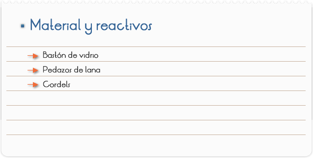
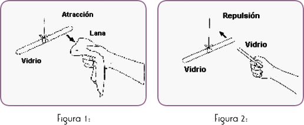
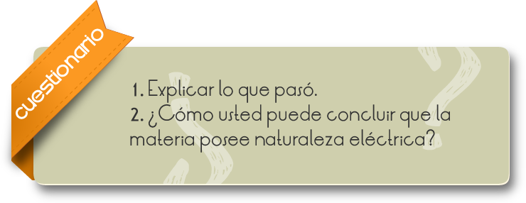
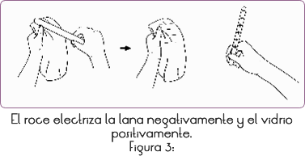

Introducción
La materia tiene una naturaleza eléctrica, esta se manifiesta de dos formas diferentes (positiva y negativa) asociadas a las partículas elementales que constituyen el átomo, siendo este, a su vez, la pieza fundamental de construcción de todo lo que nos rodea.
Así, la envoltura externa del átomo está formada por electrones que presentan carga negativa.
El interior, el núcleo, sin entrar en discusiones sobre su estructura, tiene carga positiva.
Y todo ello porque las cargas de diferente signo establecen entre ellas fuerzas de atracción y las del mismo de repulsión...
Gracias a esta naturaleza eléctrica los diferentes átomos pueden interactuar entre si formando estructuras más complejas que a su vez se agrupan en otras nuevas originándose, de este modo, la enorme diversidad que presenta el universo tal y como lo conocemos.
Podemos imaginar a un átomo como una esfera con un núcleo central, de carga positiva, y donde está concentrada prácticamente toda la masa del mismo
La carga positiva del núcleo tiene igual valor que la negativa de los electrones de modo que la resultante es nula y el átomo aislado es neutro.
Cuando dos átomos se aproximan comienzan a darse entre ellos una serie de fuerzas de atracción entre el núcleo de uno, sus electrones y los del otro átomo.
Objetivo
Observar la naturaleza eléctrica de la materia.

1. Friccionar un bastón de vidrio con un pedazo de lana, colgándolo con ayuda de un cordel.
2. Aproximar el pedazo de lana al bastón y anotar lo que ocurre (Figura 1)
3. Friccionar otro bastón de vidrio en otro pedazo de lana, aproximarlo del bastón colgado (Figura 2) y anotar lo que ocurre.


RESULTADOS Y CONCLUSIONES
En el ítem 2 notamos que el bastón de vidrio y la lana se atraen y, en el ítem 3, el bastón de vidrio colgado irá a repeler el otro. Esto demuestra la presencia de fenómenos eléctricos.
Cuando friccionamos los dos materiales, el bastón de vidrio pasa a ser portador de carga eléctrica negativa (en ambos casos por convención) (Figura 3)

La lana (cargada negativamente) es atraída por el bastón de vidrio (cargado positivamente). Sin embargo, los dos bastones de vidrio electrificados, con cargas de la misma polaridad, se repelen. Podemos concluir que las cargas eléctricas de signos diferentes se atraen y del mismo signo se repelen.